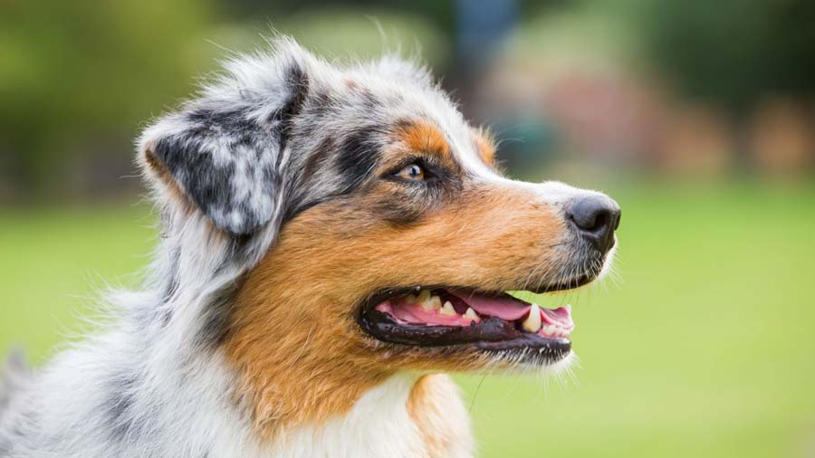
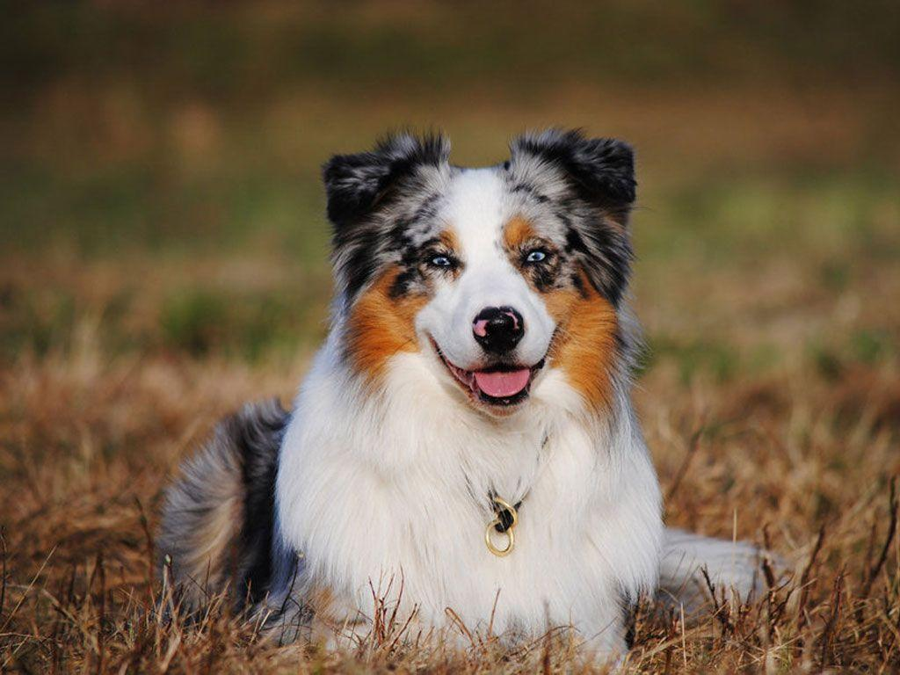
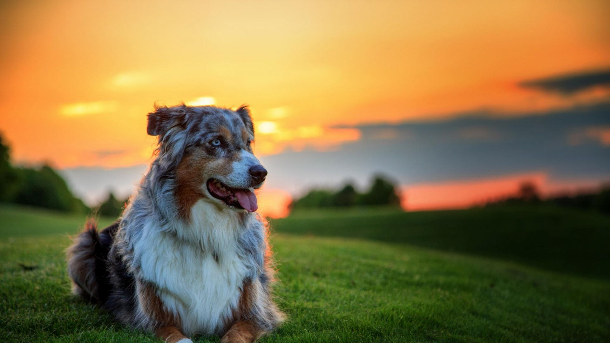
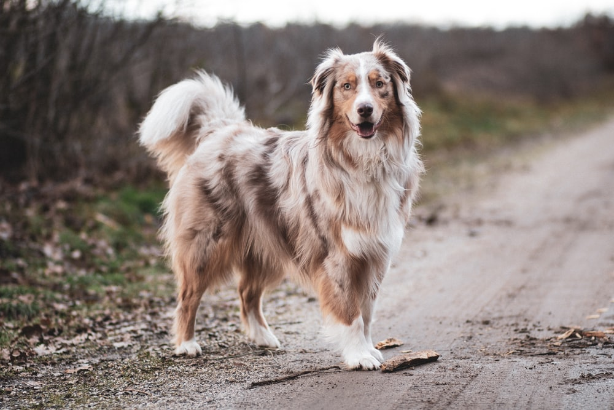

Australian Shepherd

origin
United States
size
Large
color
Others
type
Purebred
breed group
Herding (AKC:1991 & UKC)
character
Smartest
temperament
Active, Affectionate, Friendly, Good-natured, Intelligent, Protective, Loving
height
20-23 inches (52-58cm)
weight
50-65 pounds (25-29 kg)
geography
North America
overview
This is an athletic dog of medium size and bone; it is lithe, agile and slightly longer than it is tall. It is muscular and powerful enough to work all day, without sacrificing the speed and agility necessary to cope with bolting livestock. Its gait is free and easy, and it must be able to change direction or speed instantly. Its double coat is weather resistant, with the outer coat of medium texture and length, straight to wavy. The expression is keen, intelligent and eager.
The Australian shepherd has a great deal of stamina and is loving, bold, alert, confident, independent, smart and responsive. If it doesn't get a chance to exercise and challenge its strongly developed mental and physical activities, it is apt to become frustrated and difficult to live with. With proper exercise and training, it is a loyal, utterly devoted and obedient companion. It is reserved with strangers and has a protective nature. It may try to herd children and small animals by nipping.
history
The Australian Shepherd (affectionately called an ‘Aussie’) does not actually originate in Australia. It is believed that some Basque farmers brought ancestors of these dogs with them when they emigrated to Australia, then subsequently to the United States during the 1849 California gold rush. However, the breed as it is known today was developed in the American Southwest over the next few decades.
The Australian dog was crossed with several breeds in an effort to produce an animal able to deal with the harsh temperatures and demands of the American West. Breeding during this period was mainly focused on ability—speed, agility, and endurance--rather than appearance, which delayed the Australian Shepherd’s recognition as a breed. Australian Shepherds became popular pets after they were featured as rodeos performers in the 1950’s, and later in Disney films such as ‘Run Appaloosa Run’. Australian Shepherds were recognized by the American Kennel Club in 1993.
Photo Gallery


